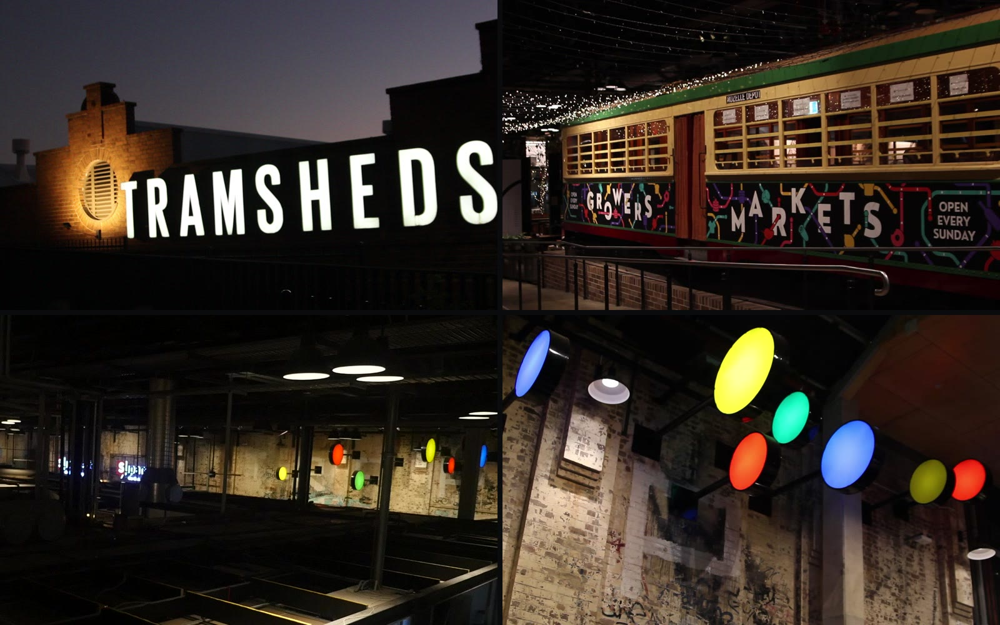
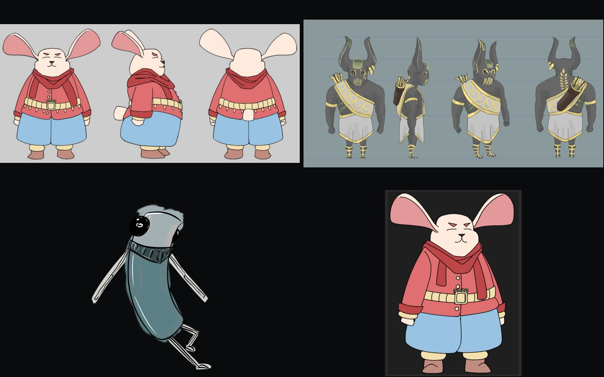
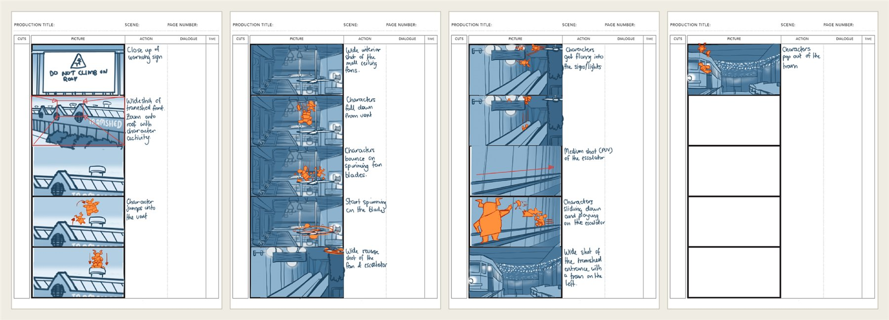
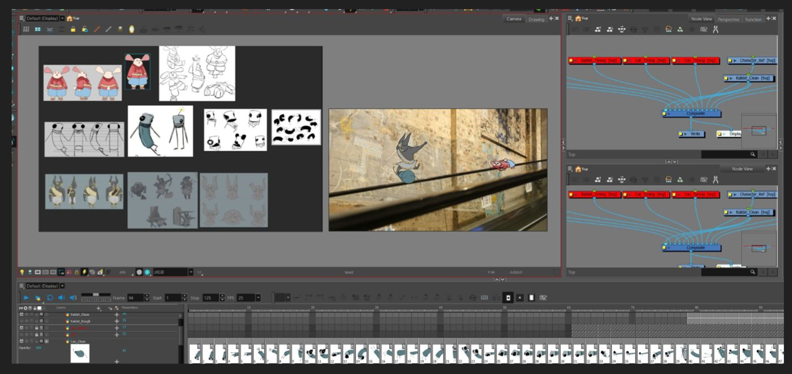
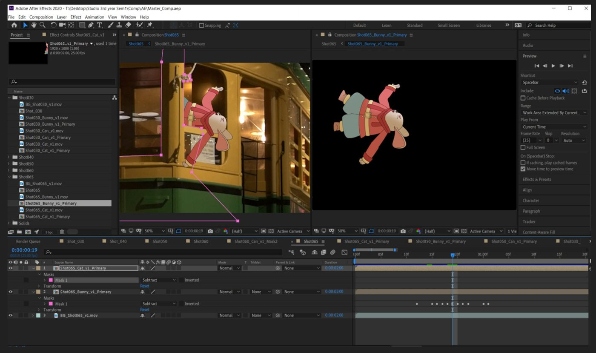

This project is a fun, energetic showcase of the location Tramsheds. I led my team choosing the location Tramsheds for its rich cultural and local history. From abandoned to utilised by local community as event space, playground and graffiti art space for self expression then finally now commercialised renovated to a modern shopping district.
The story follows three uniquely distinct characters reinhabiting the public space, making it their own, just as the local communities did back in the day. The metal tube character I designed gets led on by the trouble makers, the cat and rabbit (designed by Jasmine and Brandon) to go and explore the modern Tramsheds.
Process
The track below showcases a simple overview of our production pipeline.

The location Tramsheds is a beautiful architectural blend of the old tramshed structure with modern aesthetics and interior design. Initial visits we filmed many interesting angles, then on the reshoot, we zoned into the area and sections that we had more concrete ideas to animate over.

The three distinct characters I aimed to display their personalities with the way they moved throughout the space. The metal tube character I designed was kept simple on purpose, in order for us to give it the most action, while keeping our overall animation budget down. The cat and rabbit designed by Jasmine and Brandon were more detailed, we were able to assign them with more subtle movements and detailed expressions to showcase their charm.

The whole film’s storyboard done with the help of Brandon Pen.
An example clip of our animatic stage. This shot was done in part with Jasmine Lai.

Most of our shots are animated traditionally and coloured in Toon Boom Harmony. I used 2D rig for my metal tube character in the final scene to dial in the expressions and efficiency. Some nodes like the Turbulence node are used to create line boil effects, specifically for the cigar smoke in the final scene.

After Effects is used to comp in the characters on to the filmed plates. We also did the colour grading, adding shadows, highlights, and edge lights to create the effect of subsurface scattering in After Effects. In the end, all came together to really sell the effect, the characters are in the space.
Before / After
This side by side comparison shows how we followed closely with the animatic, and used the timing charts effectively to give the characters a dynamic movement.
Credits
‘Conga!’ performed by Miami Sound Machine, used sped up. Atmospheric sound was recorded on location at the Tramsheds; additional effects were foleyed from household items. Further sounds from Freesound.org under their respective licences — lmr9 (‘Hit to the can’), Dheming (‘metal_hit_02’), jrhodesza (‘Can hit’), rsellick (‘Metal clanks’), Brown_Sound (‘2 can hit tile floor’), ntar10 (‘metallic_clanking’) and vibe_crc (‘Metal clank’).